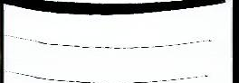
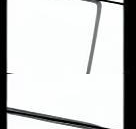
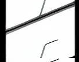
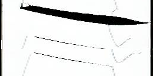
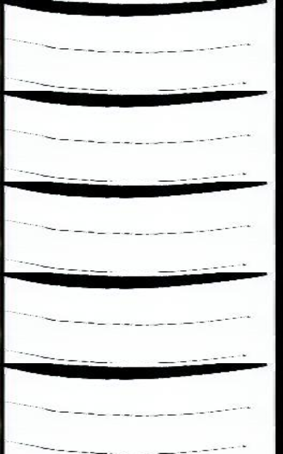
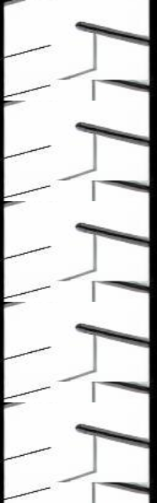
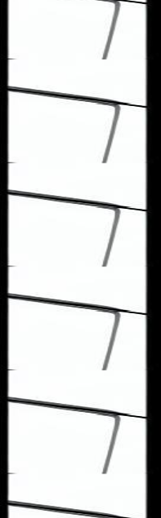
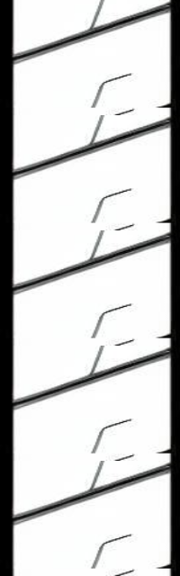
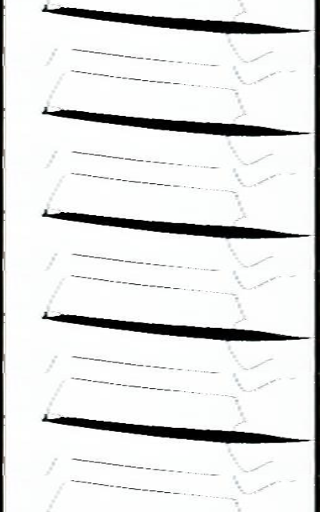
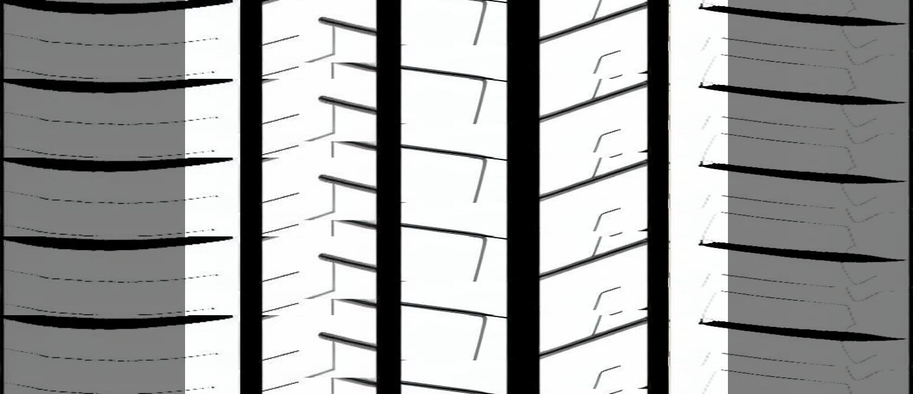

大图生成函数研发需求文档 v2
1
核心目标
实现一个函数，根据 ImageLineage 血缘信息，完成图片操作 → 多图拼接 → 装饰覆盖的完整流程，最终生成大图。
2
算法流程图
输入: ImageLineage 对象
│
▼ [RIB图片预处理]
┌─────────────────────────────────────────────┐
│ 遍历每个 RibSchemeImpl: │
│ 1. after_image已存在? → 跳过 │
│ 2. 解码 before_image (base64) │
│ 3. 执行rib_operation操作管道 │
│ 4. 纵向重复 num_pitchs 次 │
│ 5. resize(rib_width, rib_height) │
│ 6. 编码为base64存入 after_image │
└─────────────────────────────────────────────┘
│
▼ [主沟图片预处理]
┌─────────────────────────────────────────────┐
│ MainGrooveImpl处理: │
│ 1. after_image已存在? → 跳过 │
│ 2. 解码 before_image (base64) │
│ 3. resize(groove_width, groove_height) │
│ 4. 编码为base64存入 after_image │
└─────────────────────────────────────────────┘
│
▼ [装饰图片预处理]
┌─────────────────────────────────────────────┐
│ DecorationImpl处理: │
│ 1. after_image已存在? → 跳过 │
│ 2. 解码 before_image (base64) │
│ 3. resize(decoration_width, decoration_height)│
│ 4. 应用 decoration_opacity 透明度 │
│ 5. 编码为base64存入 after_image │
└─────────────────────────────────────────────┘
│
▼ [参数验证]
┌─────────────────────────────────────────────┐
│ 验证规则: │
│ - 所有图片高度一致 │
│ - 装饰宽度 ≤ 总宽度/2 │
│ - 必需字段存在 │
│ - 尺寸参数有效 │
└─────────────────────────────────────────────┘
│
▼ [横向拼接]
┌─────────────────────────────────────────────┐
│ 按顺序拼接: │
│ rib1 + groove + rib2 + groove + ... + ribN │
└─────────────────────────────────────────────┘
│
▼ [装饰覆盖]
┌─────────────────────────────────────────────┐
│ 在大图左右两侧各覆盖一个装饰图片 │
└─────────────────────────────────────────────┘
│
▼ [返回结果]
输出: (更新后的 ImageLineage 对象, base64 大图)
3
函数签名设计
from typing import Tuple
def generate_large_image_from_lineage(
lineage: ImageLineage
is_debug: bool = False
) -> Tuple[ImageLineage, str]:
"""
根据血缘信息生成大图
Args:
lineage: ImageLineage - 包含完整血缘信息的对象 is_debug: bool - 是否启用调试模式，默认False
Returns:
Tuple[ImageLineage, str] - (更新后的血缘对象, base64编码的大图)
"""
4
详细处理流程
一、RIB图片操作处理
跳过检查：如果
RibSchemeImpl.after_image 已有图像数据，直接跳过该RIB的所有操作输入处理：每个
RibSchemeImpl.before_image 都是base64编码的单张图片，需要进行适当的图像处理执行操作管道：按顺序执行
rib_operation 元组中的所有操作（管道化执行）纵向重复：将操作后的结果纵向重复
RibSchemeImpl.num_pitchs 次尺寸调整：按照
RibSchemeImpl.rib_height 和 RibSchemeImpl.rib_width 进行resize结果保存：将最终的base64图像数据保存到
RibSchemeImpl.after_image循环处理：继续处理下一个
RibSchemeImpl，直到所有RIB处理完成二、主沟图片操作处理
跳过检查：如果
MainGrooveImpl.after_image 已有图像数据，直接跳过主沟操作（主沟只使用一张图）尺寸调整：读取主沟花纹图片
MainGrooveImpl.before_image，按照 MainGrooveImpl.groove_width 和 MainGrooveImpl.groove_height 属性进行resize结果保存：将处理后的base64图像数据保存到
MainGrooveImpl.after_image三、装饰图片操作处理
跳过检查：如果
DecorationImpl.after_image 已有图像数据，直接跳过装饰操作（装饰只使用一张图）尺寸调整：读取装饰花纹图片
DecorationImpl.before_image，按照 DecorationImpl.decoration_width 和 DecorationImpl.decoration_height 属性进行resize透明度处理：根据
decoration_opacity 参数调整图像透明度结果保存：将处理后的base64图像数据保存到
DecorationImpl.after_image四、横向拼接处理
拼接顺序：按照
rib1 + 主沟花纹 + rib2 + 主沟花纹 + ... + ribN 的方式横向拼接所有图片五、装饰覆盖处理
双侧覆盖：在拼接完成的大图左右两侧，各覆盖一个
DecorationImpl.after_image〇、参数验证规则
- 高度一致性：所有RIB图片、主沟图片、装饰图片的高度必须保持一致
- 装饰宽度限制：装饰图片的宽度不应超过最终大图总宽度的1/2
- 必要字段检查：确保所有必需的图像字段（before_image、after_image等）都已提供
- 尺寸有效性：所有resize参数（rib_width/height、groove_width/height、decoration_width/height）必须为正整数
5
技术选型决定
图像处理库: OpenCV (cv2)
- 理由：项目已有
src/utils/image_utils.py完全基于OpenCV，保持技术栈一致性；所有RIB原子操作均可通过cv2 + numpy实现；支持BGRA透明度通道保留 - 具体模块：
import cv2, numpy as np
6
需求边界
✅ 本函数负责：
- 执行RIB图片的各种原子操作
- 按顺序水平拼接处理后的RIB和主沟图片
- 在大图两侧覆盖装饰花纹
❌ 本函数不负责：
- 拼接方案的决策逻辑（由外部模板生成器处理）
- 血缘对象的验证和生成（由调用方保证）
- 复杂的布局计算（位置信息已由血缘数据提供）
7
示例说明（可视化参考）
以 rib_number=5，无对称性要求的场景为例：
输入RIB图片：

rib1

rib2

rib3

rib4

rib5
(如无法显示，请查看: tests/datasets/stitching/rib[1-5].png)
预处理后的 after_image 拼接序列：
横向拼接顺序：装饰 · rib1 · 主沟1 · rib2 · 主沟2 · rib3 · 主沟3 · rib4 · 主沟4 · rib5 · 装饰
装饰

rib1

主沟1

rib2

主沟2

rib3

主沟3

rib4
主沟4

rib5
装饰
(如无法显示，请查看: tests/datasets/stitching/)
预期输出大图：

bigimage (如无法显示，请查看: tests/datasets/stitching/correct_black_decoration.png)
处理流程：
RIB预处理：对每个RIB执行操作管道 → 纵向重复num_pitchs次 → 按rib_width/height resize
主沟预处理：对主沟图片按groove_width/height resize（如果after_image不存在）
装饰预处理：对装饰图片按decoration_width/height resize并应用透明度（如果after_image不存在）
参数验证：检查所有图片高度一致、装饰宽度合规等
横向拼接：按rib1 + groove + rib2 + groove + ... + rib5的顺序拼接
装饰覆盖：在大图左右两侧各覆盖一个装饰图片
输出结果：返回 (更新后的ImageLineage对象, base64编码的大图)